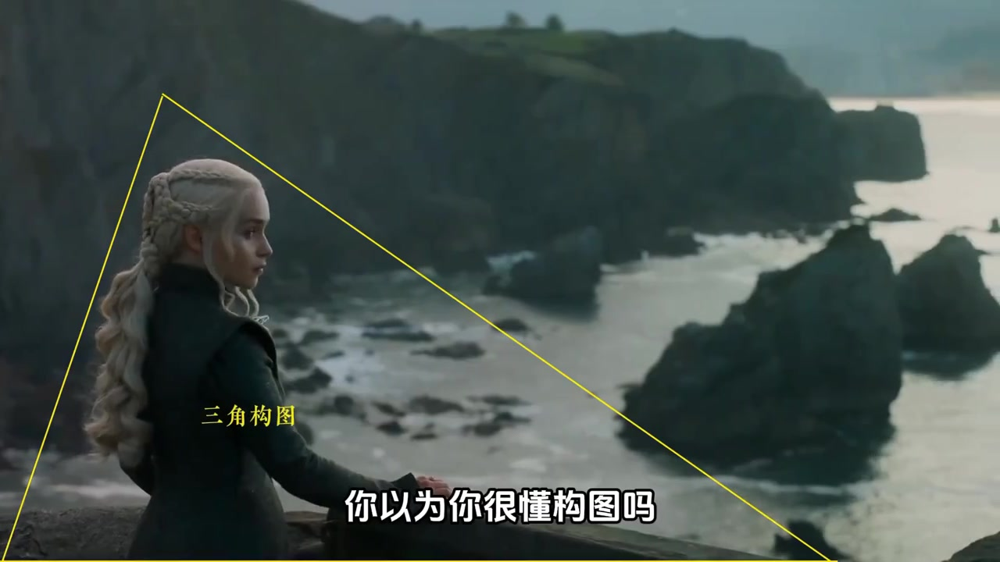
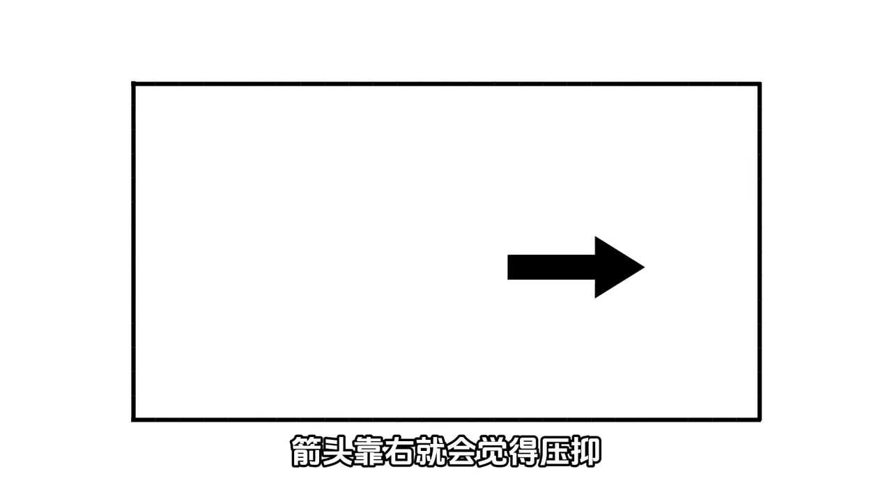
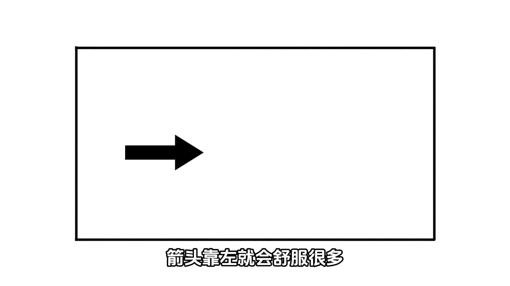
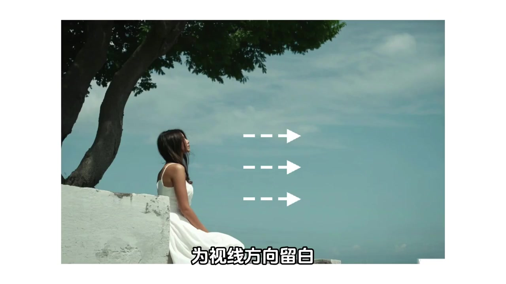
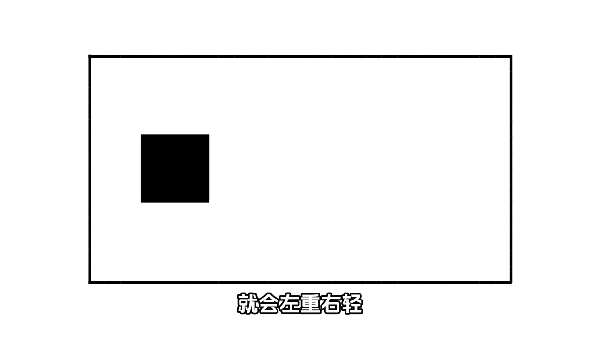
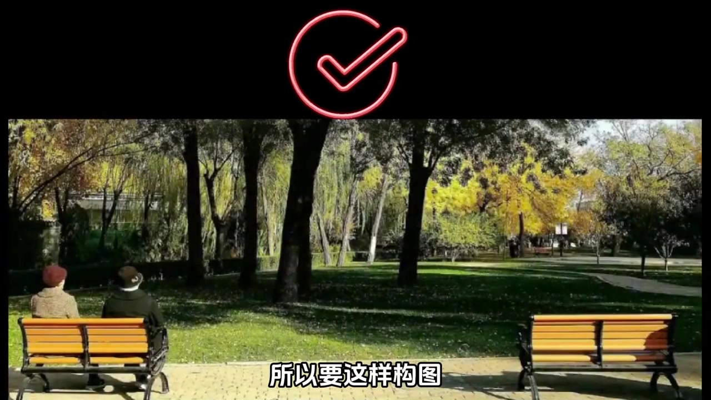
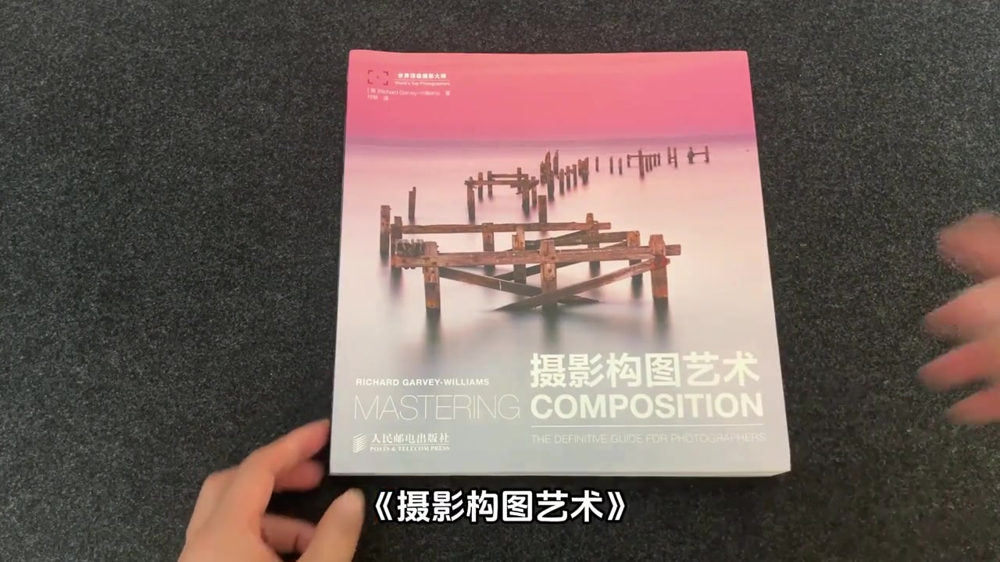
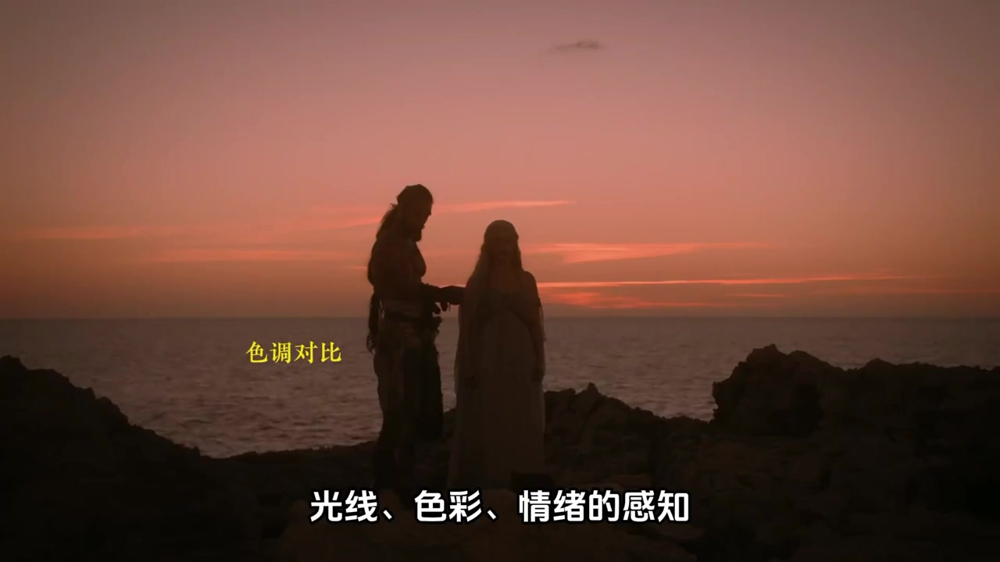

开场：别停在三分线公式
画面先砸出一句挑衅式提问，再切到《权力的游戏》丹妮莉丝海边侧影。黄色三角线框住主体，叠字「三角构图」——创作者用熟悉的影视画面告诉你：真正懂构图的人，不会只背三分线、黄金分割这些基础公式。
「你以为你很懂构图吗……而是懂得构图背后的审美法则」
说明：Whisper 将「审美法则」识别为「是没法则」。下文叙述按画面语义与上下文校正；文末转录区仍完整保留原始分段。

箭头实验：靠右压抑、靠左留白
演示切成黑白示意框。同一支黑色箭头指向右方：先贴在画框右侧，字幕写「箭头靠右就会觉得压抑」；再挪到左侧，右边留出大片空白，字幕改成「箭头靠左就会舒服很多」。创作者把这种方向感立刻落到实拍——人物放在左侧，视线朝右，为视线方向留白，引导视觉空间。
「就不会把人放在右边导致视线轨迹受阻，而是放在左边，为视线方向留白引导视觉空间」



方块实验：视觉重量与平衡
箭头换成实心方块。方块单独放到左侧时，画面字幕出现「就会左重右轻」，构图失衡。恢复平衡的办法很直观：在右边再加一个元素，像在跷跷板另一端放上重物。随后给出公园长椅正例（双人坐左椅、右椅空置与树木阴影形成对位），并对比错误构图。
「想要恢复平衡，就需要在右边增加一个元素，如同在跷跷板的另一端放上重物」
说明：Whisper 将「左重右轻」识成「左中右清」，将「跷跷板」识成「悄悄版」；字幕与画面已给出正确语义。


书本落点：《摄影构图艺术》
创作者把前面的演示收束到一本书：Richard Garvey-Williams 的《摄影构图艺术》（Mastering Composition）。强调它不是停留在三分法、九宫格，而是深入美学、数学和观众心理学，帮助构建牢固的审美体系——从具象的视觉重量，到抽象的格式塔理论，再到色彩对构图的影响。
「这本书最厉害的地方，就是它让你通过本质了解构图」
说明：Whisper 将「九宫格」识成「九公格」，将「审美体系 / 具象的视觉重量」识成「神秘体系 / 神秘的视觉重量」；叙述按书名与上下文校正。

收尾：审美、光线与故事感
创作者补充：每个术语都会配专业摄影作品与对比图，让新手也能说清「好在哪里」。书的作用不只是教公式，还能提升审美，增强对场景布置、光线、色彩、情绪的感知，最终拍出更有美感、更有故事的作品。收尾画面用海边剪影叠「色调对比」，把光线与情绪重新推到前景。
「增强你对场景布置、光线、色彩、情绪的感知，帮你拍出更有美感、更有故事的好作品」
